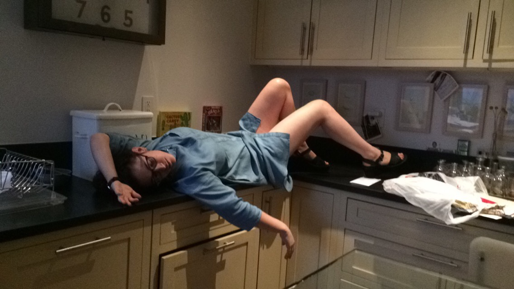
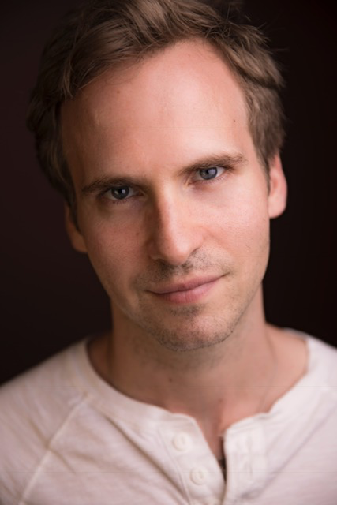
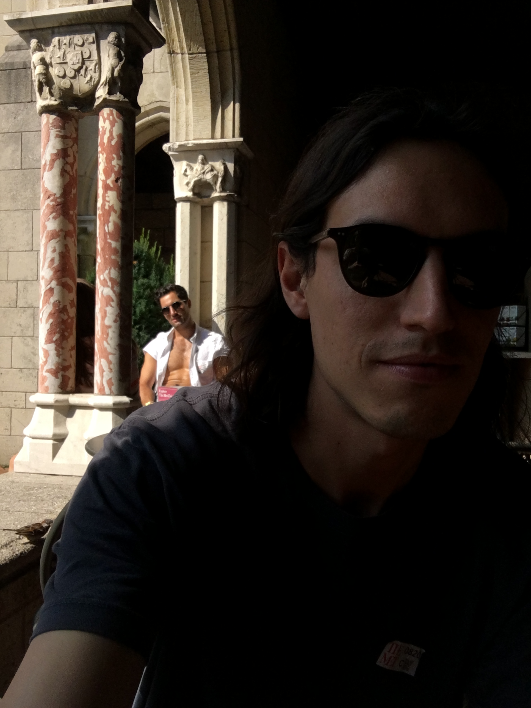
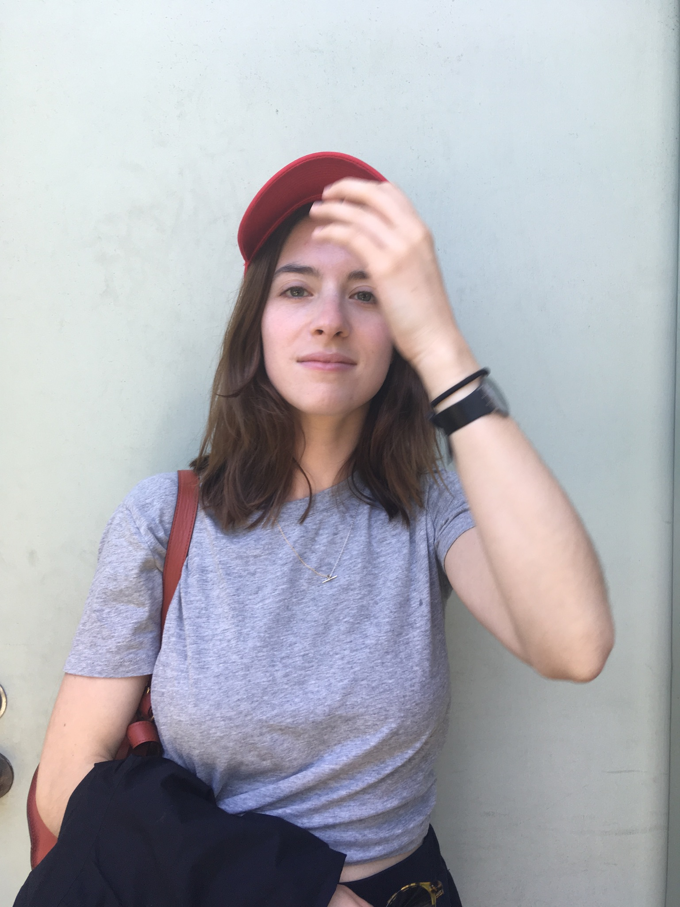
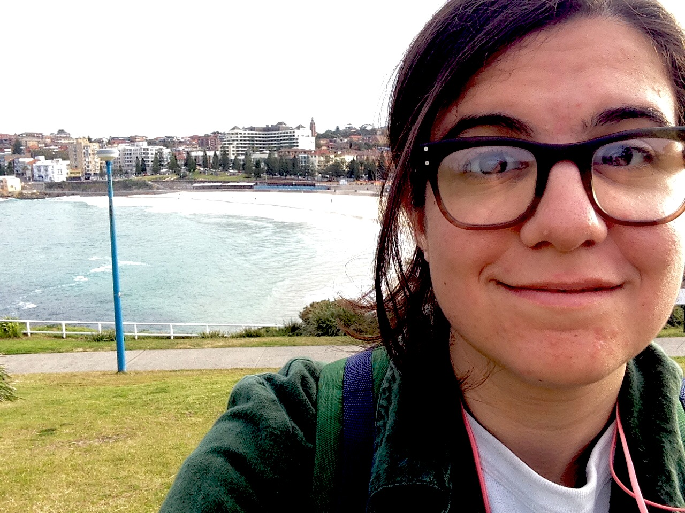
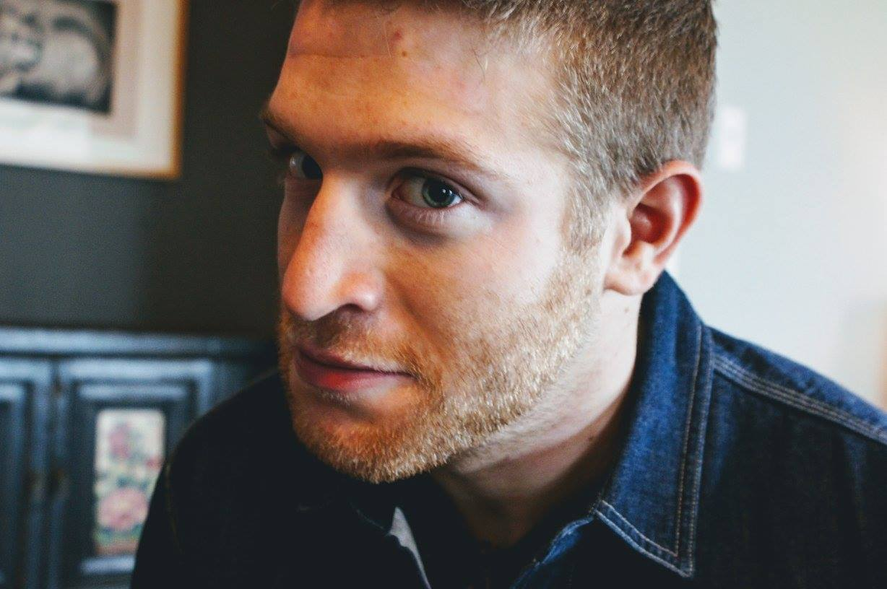

JUGHEAD FILMS
Jughead Films is a film collective created by Emma Horwitz and Claire Siebers in 2016 with the express purpose of making movies together.
CREATORS
CLAIRE SIEBERS
Claire Siebers is a Brooklyn-based writer of plays, films, and short fiction, and also an actor. Some Acting Credits: [Theater]The Workshop (with Austin Pendleton, softFocus), Pocatello/When You're Here (Williamstown Theatre Festival), Actors Theater of Louisville, Ars Nova, Clubbed Thumb, Lincoln Center, The Whitney Museum, The New Group, The Rattlestick, Under the Radar. [Film] "Other People." She is from Michigan and France and went to Yale and Juilliard.

EMMA HORWITZ
Emma Horwitz is a writer of plays, fictions, and films from New York City. She currently lives in Providence, where she is pursuing her MFA in Writing for Performance at Brown University.
CAST
TIFFANY CLIFTON
Tiffany Clifton studied Television, Film and Theater at Brooklyn College. She is honored to have worked with this incredible cast and crew of Power Lunch. Credits: [Theater] "Conversation with Death" (SF Theater Festival) "Monster" by Sabrina Paterson(Fringe Festival) "Busted" "Chez Moi" and "Daughter/Father" written by Florencia Lozano. [Television] "Sesame Street."

RYAN SPAHN
Ryan Spahn began his off-Broadway career in Branden Jacobs-Jenkins' Pulitzer Prize finalist Gloria at the Vineyard Theatre. He went on to appear in Michael McKeever's Daniel's Husband and Ike Holter's Exit Strategy, both for Primary Stages. [Recent regional credits] Moscow Moscow Moscow Moscow Moscow Moscow at Williamstown Theatre Festival, Gloria at Goodman Theatre (TimeOut Theatre Award nomination), Exit Strategy at Philadelphia Theatre Company (Barrymore and DC Metro Arts Award nominations), Tribes at Actors Theatre of Louisville, and Sick at Berkshire Theatre Group. [Feature film] Woven (LA Film Festival premiere, co-writer), He’s Way More Famous Than You (Slamdance Film Festival premiere, co-writer), Grantham & Rose (Cleveland International Film Festival premiere, writer). [Co-creator] the digital series What’s Your Emergency (Stage17.tv). [Writer] Logo’s Cocktails and Classics. [Education] BFA from The Juilliard School.

JEFF HORWITZ
Jeff Horwitz is a lawyer. Sometimes he acts. Sometimes he doesn’t.
CREW

BERNARDO GARCIA
Bernardo Garcia was born in Mexico City and now lives in New York City.

JESS COLES
Jess Coles is a filmmaker in New York City, where she was born and raised. You can see more of her work at jesscoles.com.
(we have to put more of Jess's work into her bio...like Mary Marie...Emma, maybe you can help with that?

LISA REGGIE FRANKLIN
Lisa Franklin is a comedian from New York. She writes and draws a comic called "My Two Lesbian Ants," which you can find on Twitter and Instagram. Lisa has also been published on The Toast and once got a single joke into The Onion, but for legal reasons can't tell you what the joke was.

NOAH KERNIS
Noah Kernis ss... This is hard to do. He like, works in computers - but he did the audio recording for this series. He also built this site. He has also acted (continues to act?) and tells jokes... like a lot of them. OH! He also makes comics - check out his work here: GENERIC_ERROR.
SPECIAL THANKS
ALEX BREAUX
ANNIE LEWELLYN
DONALDO PRESCOD
MATT COOK
MAX WOERTENDYKE
PAUL SNYDER
PIERCE SIEBERS
TRAVIS KAUFFMAN
FOLKSBIER BRAUEREI
Folksbier Brauerei has been brewing beer in the Carroll Gardens neighborhood of Brooklyn since 2014. Their focus is on well balanced beers that take the best parts of traditional old world brewing and combine them with new world ingredients, influences and flavors.